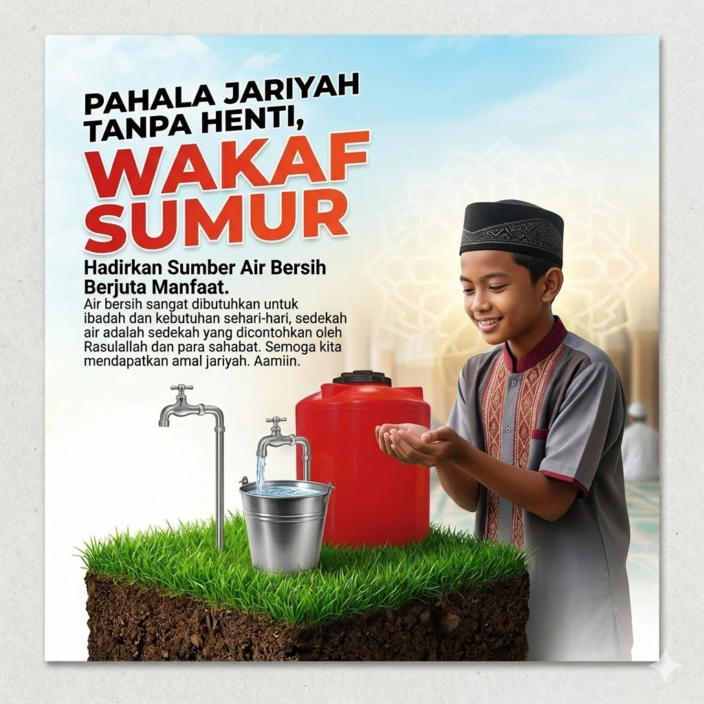

Sumur gali lama sudah tidak mampu memenuhi kebutuhan wudhu 350 santri saat kemarau. Wakaf sumur bor dalam ini adalah solusi jangka panjang untuk memastikan kesucian ibadah santri terjaga sepanjang tahun.

Dana Terkumpul (Titik 2)
Rp 28.455.000 / Rp 32.000.000
88.9%
*Kurang Rp 3.545.000 untuk pengadaan Mesin Submersible dan Toren Air 2000L.
65 Meter (Casing 4 Inch)
Rp 12.500.000 (Jasa+Pipa)
Sumur gali lama sudah tidak mampu memenuhi kebutuhan wudhu 350 santri saat kemarau. Wakaf sumur bor dalam ini adalah solusi jangka panjang untuk memastikan kesucian ibadah santri terjaga sepanjang tahun.